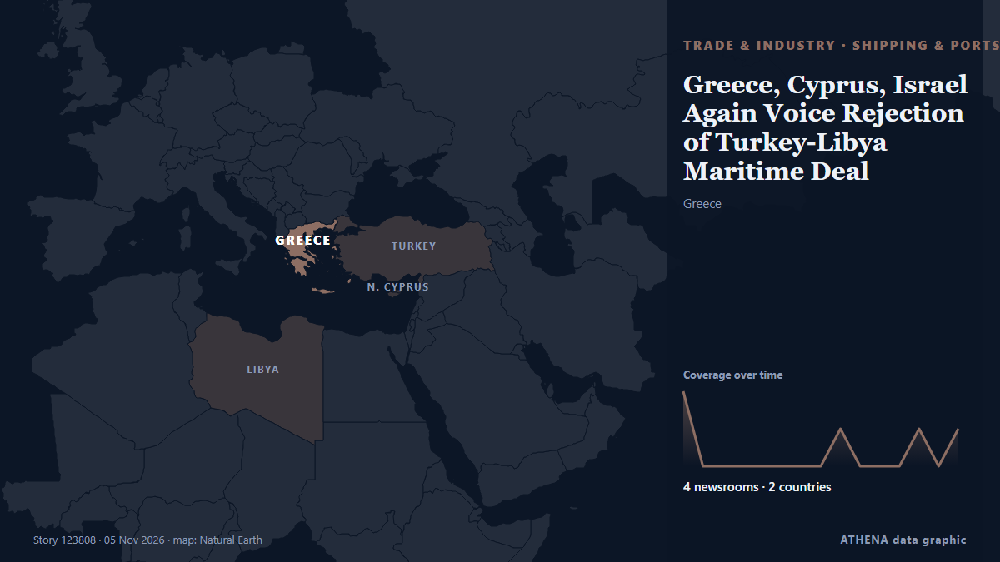

Transporte marítimo y puertos
PatrocinadoPresentado por  Cybernetics and Artificial Intelligence Lab Welcome to the Cybernetics and Artificial Intelligence Laboratory, established at the Department of Business Administration of the National and Kapodistrian University of Athens. The lab is headed by Professor Dimitrios Thomakos. The lab aims to do research that can be published in top venues. Our research uses tools and methods of Artificial Intelligence, and lies in the following areas: - Forecasting - Decision making - Cyber security - Finance We are always looking forward to collaborating with exceptional students!
Cybernetics and Artificial Intelligence Lab Welcome to the Cybernetics and Artificial Intelligence Laboratory, established at the Department of Business Administration of the National and Kapodistrian University of Athens. The lab is headed by Professor Dimitrios Thomakos. The lab aims to do research that can be published in top venues. Our research uses tools and methods of Artificial Intelligence, and lies in the following areas: - Forecasting - Decision making - Cyber security - Finance We are always looking forward to collaborating with exceptional students!
| 23 oct | 0 |
|---|---|
| 24 oct | 0 |
| 25 oct | 0 |
| 26 oct | 1 |
| 27 oct | 0 |
| 28 oct | 1 |
| 29 oct | 0 |
| 30 oct | 0 |
| 31 oct | 2 |
| 1 nov | 2 |
| 2 nov | 6 |
| 3 nov | 4 |
| 4 nov | 3 |
| 5 nov | 4 |
Los titulares se muestran en inglés, tal como se publicaron.

Greece, Cyprus, Israel Again Voice Rejection of Turkey-Libya Maritime Deal
A trilateral meeting in Athens focused on maritime security, defense industry cooperation and regional threats, with the three countries challenging the legal validity of the Turkey-Libya memorandum… de To Vima (English)
Report: South Korea's anti-piracy unit to expand operations closer to Hormuz Strait
SEOUL, Nov. 5 (Yonhap) -- South Korea plans to expand its anti-piracy mission of... de Yonhap (English)
Iran’s IRGC says four tankers destroyed after hitting mines near Strait of Hormuz
Coalition says it destroyed two ballistic missile launchers The Coalition has released footage it says shows the targeting and destruction of two ballistic missile launch platforms. de Gulf News
Tanker Struck by Two Unidentified Projectiles Off Qatar Coast
DOHA, Nov 5 : A tanker has been struck by two unidentified projectiles in waters approximately 50 nautical miles north of Madinat ash Shamal, Qatar, according to the United Kingdom... de Arab Times
Windward expands into Maritime Visual Intelligence with acquisition of Azimut.ai
The newly added sensing layer identifies and fingerprints vessels in real time at maritime chokepoints and ports, enabling the visibility. de Cyprus Shipping News
Chile maintains environmental approval for San Antonio Outer Port
Chile’s Committee of Ministers has maintained the favourable environmental approval for the US$4 billion San Antonio Outer Port project. de Container News
NAVTOR introduces real-time AIS streaming in NavFleet platform
Maritime technology company NAVTOR has introduced real-time AIS streaming to its NavFleet platform, allowing fleet managers to monitor vessel positions, movements and surrounding traffic with minimal… de MarineLink
Cosco Shipping Ports sees steady volume growth in Q3
The Chinese port operator has maintained revenue growth amid global trade disruption. de Seatrade Maritime
Somali Pirates Hijack Iranian Dhow, Marking Fourth Off Somalia in 2026
On October 29, 2026, a Somali Pirate Action Group of 12 armed pirates hijacked the Iranian fishing dhow AZINI approximately 185 nautical miles east of Bandarbeyla, Puntland. de MarineLink
Iran exempts ships of four countries from Strait of Hormuz transit restrictions
Iran has exempted vessels belonging to India, China, Iraq and Qatar from transit restrictions imposed in the Strait of Hormuz. de AzerNews
International Transport Employees Federation Formed In India To Protect Seafarer Rights
Indian maritime unions and welfare groups establish ITEF in Chennai to strengthen seafarers’ rights, safety and welfare. de Marine Insight
‘World’s first three ammonia-fuelled Capesize bulk carriers’ named at ceremony in China
A naming ceremony for what Mitsui O.S.K. de Ship.Energy
DP World strengthens China–Africa corridor with new shipping link
The China Africa Link strengthens maritime connections between the Far East and Africa, supporting more flexible supply chains and access. de Cyprus Shipping News
Tanker hit by two unknown projectiles off Oman, UKMTO says
The location of the latest strike matters most for oil. de investingLive (ForexLive)
KONGSBERG expands underwater surveillance technology for port security
KONGSBERG has launched two new sonar systems designed to improve underwater surveillance, navigation and the protection of critical maritime infrastructure. de Container News
US Strikes Iranian Targets in the Strait of Hormuz, Official Says
The drop reflects traders trimming some of the geopolitical premium built into crude in recent weeks rather than any change in physical supply, which remains constrained while Hormuz flows are… de investingLive (ForexLive)
MacGregor secures retrofit contract for 35 Wallenius Wilhelmsen vessels
MacGregor has secured a contract to upgrade Programmable Logic Controller (PLC) systems aboard 35 Pure Car and Truck Carrier (PCTC) vessels operated by Wallenius Wilhelmsen. de Container News
Maersk and Hapag-Lloyd reroute Gemini IOS service via Red Sea
Maersk and Hapag-Lloyd have announced plans to reroute their Gemini Cooperation Indian Ocean Service (IOS) through the Red Sea and Suez Canal, replacing the longer route around the Cape of Good Hope. de Container News
Forbes highlights Nador West Med's $5.5 billion investment and energy ambitions
Morocco’s Nador West Med port complex has attracted 54 billion dirhams ($5.5 billion) in public and private investment, strengthening the country’s ambitions to become a major maritime, industrial… de Hespress English